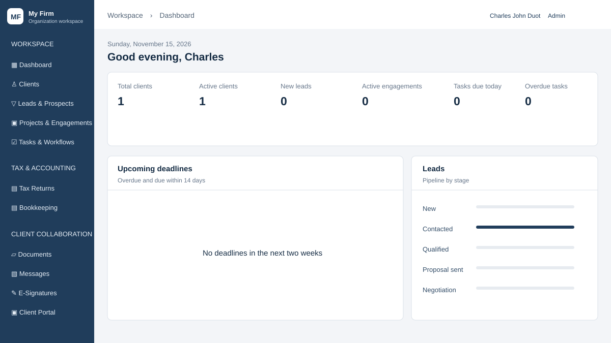

← Projects
Personal CRM
A connected workspace for tax and accounting firms.
Personal CRM brings client relationships and everyday firm operations into one place, helping teams manage work from first inquiry through ongoing service.
Features
- Manage clients and leads — organize client records, track prospects, and follow each opportunity through your pipeline.
- Coordinate engagements — manage tax preparation, bookkeeping, tasks, and deadlines in a shared workspace.
- Collaborate securely — exchange documents and messages with clients, and send signature requests through Dropbox Sign.
- Keep firm operations moving — review invoices, upcoming deadlines, and team activity from the dashboard.
- Connect your tools — link firm QuickBooks Online accounts for client billing and use PayPal for CRM subscriptions.

Project preview
A practice dashboard that brings together client activity, upcoming deadlines, team tasks, and the lead pipeline.
Keep client work moving
Designed for U.S. tax and accounting firms, Personal CRM connects the day-to-day work of managing clients, coordinating engagements, and staying on top of deadlines.